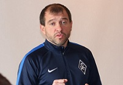

Крылья для Скрипченко.

Наставник «Урала», подавший в отставку после матча с «Тереком», неожиданно оказался в Самаре. На специально созванной в Екатеринбурге пресс-конференции тренер заявил, что устал, а команде нужна свежая кровь. Видимо, белорус устал именно от «Урала», поскольку новое место работы обрёл всего через сутки. Президент «шмелей» Григорий Иванов негодовал, и понять его можно: следующий матч, ключевой с точки зрения борьбы за выживание, его клуб проведёт именно в Самаре уже в субботу. «Крылышки», достаточно уверенно закрепившиеся в элите после возвращения из ФНЛ, начали новый сезон откровенно слабо. Веркаутерен упорно гнул свою линию, но команда осталась беззубой в атаке, потеряв в надежности сзади. Вылет из Кубка России и поражение от соседа по подвалу «Оренбурга», опустившие самарцев на дно, подтолкнули руководство к расставанию с бельгийским специалистом. Поиски нового тренера продолжались недолго. «Урал» Скрпиченко в прошлом сезоне хорош был, прежде всего, в атаке. Забить мог почти любой, а команда играла ярко и результативно. Этого же ждут от белоруса и в «Крыльях Советов», располагающих неплохими, в общем-то, футболистами в передней линии. Тем более на носу перерыв на матчи сборных, и за эти пару недель можно успеть что-то перестроить.
В прошлом сезоне «Урал» Скрипченко, оставшегося в клубе после ухода Гончаренко, играл в зрелищный футбол, навязывая борьбу любому сопернику. Команда даже претендовала на место в еврокубках по осени. Зимой клуб потерял Подберезкина и Ерохина, скатившись в середину таблицы. Однако и 8-е место – результат для провинциальной команды приличный. Летом ушли Сапета, Асеведо, Мартынович, Гогниев, Манучарян. Все это – ключевые футболисты, в основном передней линии. Адекватной замены им найдено не было. По существу, Скрипченко был вынужден выстраивать практически новую команду из менее квалифицированных футболистов.
Манера игры «шмелей» стала более осторожной, забивали они мало. После неплохого старта «Урал» осел в нижней части таблицы. Сам тренер поставил задачу отыграть как следует в трех домашних матчах со «Спартаком», «Зенитом» и «Тереком». В первых двух «Урал» был хорош, но проиграл. А потом последовал разгром от «Терека», после которого белорус заявил, что команде нужна свежая кровь и мысль, а футболистам – повод пересмотреть своё отношение в плане работы и психологии. Для президента «Урала» Григория Иванова решение Скрипченко уйти стало полной неожиданностью. Между чередой поражений «Урал» пробился в четвертьфинал Кубка России, а по игре не выглядел безнадежно. Иванов заявил, что расстается с белорусским специалистом в дружеских отношениях и будет рассматривать его кандидатуру на пост тренера и впредь.
Сутки спустя Григорий Иванов говорил уже совсем другое: «Вчера нашим уральским журналистам он рассказывал, как ему тяжело, как он устал, что ему надо побыть дома, с семьей. А сегодня он уже нашел команду, наших непосредственных конкурентов. Весь его уход, вся эта ситуация – очень дурно попахивает. Считаю, что это очень непорядочный поступок». Сам Скрипченко заявил, что предложение поступило уже после пресс-конференции, и причин отказываться он не видит. Дмитрий Шляхтин накануне заявил, что Вадим Скрипченко – лишь один из четырех кандидатов на пост нового тренера, и со всеми ещё пройдут рабочие встречи, а только потом клуб примет решение. Однако уже сегодня утром твиттер самарцев сообщил, белорус прибыл в команду и приступил к работе.
Перемены в «крылышках» напрашивались давно. Франк Веркаутерен уверенно выиграл ФНЛ. В элите «Крылья Советов» играли прагматично, побеждая сопоставимые по классу команды и испытывая большие сложности впереди. За лето проблемы решить так и не удалось. «Крылья» остались очень закрытой командой, обороняющейся в восемь человек. Однако непростой календарь на старте отправил клуб в низу таблицы. А затем выяснилось, что соперников схожего уровня «крылышки» побеждать разучились. Ничья с «Арсеналом», поражение в Оренбурге, вылет от бедствующего «Локомотива» в Кубке России и место на дне таблицы не оставили выбора. Хотя по слухам у Веркаутерена была приличная сумма неустойки за разрыв соглашения, стороны решили сотрудничество не продолжать. Прощальным подарком бельгийца стало возвращение в команду Йоана Молло.
Чего ждать от Вадима Скрипченко? В первом матче с «Уралом» – в общем-то, ничего. Понятно, что встреча будет принципиальна для самого белоруса, для «Урала». Понятно, что он знает все болевые точки екатеринбуржцев, все слабые места, которые наверняка постарается использовать. Но знать и претворить в жизнь – вещи разные. Для самарцев, осевших на самом дне, дополнительной мотивации не надо – обыгрывать «шмелей» им надо кровь из носу. Поэтому победит тут команда, которая лучше настроится психологически, и которой больше будет сопутствовать удача. Встряску в виде прихода нового тренера получили оба коллектива. Единственное, что может здесь сделать белорус, это угадать с составом. Или не угадать. Вряд ли он будет что-то глобально перекраивать в дебютной встрече и ломать ещё не понятые игровые связи.
Уже в следующем туре, который придется на 20-е числа ноября, первые плоды работы Скрипченко станут видны. У команды останется ещё четыре матча до зимнего перерыва. И календарь в них, мягко говоря, непростой. «Спартак», «Зенит», «Краснодар» и прямой конкурент «Томь». С одной стороны, игру дуэта лидеров Скрипченко недавно разбирал и видел. Поэтому противодействовать им будет несколько проще. С другой, у «Крыльев Советов» все шансы застрять на последнем месте на длинный зимний перерыв с сомнительными перспективами. Прорыва стоит ждать впереди.
Есть мощные крылья в лице Молло и Ткачева, которых активно поддерживают Ятченко и Цаллагов. С флангами у самарцев всё неплохо. Более-менее справляется и сыгранный центр обороны. Главная проблема команды – дефицит креатива в центре и отсутствие забивного форварда. Если в атаке есть стареющий, но квалифицированный соотечественник тренера Корниленко, способный сыграть в оттяжке Паскуато и мощный, резвый Мбакогу, то человека, способного отдать последний пас, кроме Молло, не просматривается. Однако и в «Урале» акцент во многом делался на фланговую игру.
До зимы Скрипченко придётся обходиться теми футболистами, что есть. Многое будет зависеть от того, как он решит проблему отсутствия качественного волнореза, которого в команде после ухода Померко нет, и, конечно, от разрешения проблем в созидании. Единственным вариантом видится смена игровой модели, позволяющая спрятать проблемные позиции, компенсировав их за счет сильных сторон. У «Крыльев» есть не задействованные резервы – не так часто играл тот же Ткачев, Маргасов не играл вовсе. Имеется неплохая молодежь, которую в Екатеринбурге Скрипченко не боялся подпускать к основе. Возможно выстрелят те же Божин с Визновичем, давно переросшие уровень молодежного первенства. Пока же болельщикам «Крыльев» остается надеяться, что менеджмент клуба принял верное решение, поставив на Скрипченко. Ещё один вояж в ФНЛ вполне может добить небогатые «крылышки» прямо перед ЧМ в России.
-
Чемпионат России
-
№ Команда И О 1 Спартак 15 25 2 ЦСКА 15 24 3 Зенит 15 23 4 Локомотив 15 22 5 Томь 15 21
-